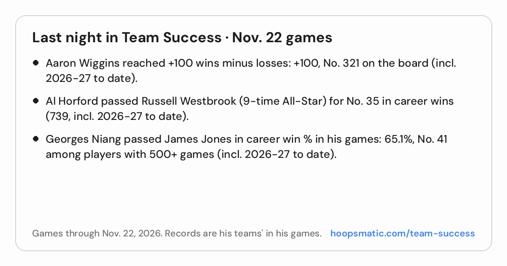

Last night in Team Success · Nov. 22 games
Nov. 23, 2026
 Aaron Wiggins reached +100 wins minus losses: +100, No. 321 on the board (incl. 2026-27 to date).
Aaron Wiggins reached +100 wins minus losses: +100, No. 321 on the board (incl. 2026-27 to date). Al Horford passed Russell Westbrook (9-time All-Star) for No. 35 in career wins (739, incl. 2026-27 to date).
Al Horford passed Russell Westbrook (9-time All-Star) for No. 35 in career wins (739, incl. 2026-27 to date). Georges Niang passed James Jones in career win % in his games: 65.1%, No. 41 among players with 500+ games (incl. 2026-27 to date).
Georges Niang passed James Jones in career win % in his games: 65.1%, No. 41 among players with 500+ games (incl. 2026-27 to date). Draymond Green passed John Havlicek (Hall of Famer) and 1 other in career win % in his games: 64.9%, No. 45 among players with 500+ games (incl. 2026-27 to date).
Draymond Green passed John Havlicek (Hall of Famer) and 1 other in career win % in his games: 64.9%, No. 45 among players with 500+ games (incl. 2026-27 to date). DeMar DeRozan passed Satch Sanders (Hall of Famer as a contributor) for No. 82 in career wins (639, incl. 2026-27 to date).
DeMar DeRozan passed Satch Sanders (Hall of Famer as a contributor) for No. 82 in career wins (639, incl. 2026-27 to date). The Utah Jazz are 3–15, the franchise's worst start through 18 games since 2013-14 (3–15).
The Utah Jazz are 3–15, the franchise's worst start through 18 games since 2013-14 (3–15). The Atlanta Hawks are 11–6, the franchise's best start through 17 games since 2014-15 (11–6).
The Atlanta Hawks are 11–6, the franchise's best start through 17 games since 2014-15 (11–6). Tonight vs the Phoenix Suns: Jordan Poole's teams are 3–15 (16.7%) in his 18 regular-season games against them (through 2025-26).
Tonight vs the Phoenix Suns: Jordan Poole's teams are 3–15 (16.7%) in his 18 regular-season games against them (through 2025-26). Tonight vs the Indiana Pacers: Isaiah Hartenstein's teams are 13–3 (81.2%) in his 16 regular-season games against them (through 2025-26).
Tonight vs the Indiana Pacers: Isaiah Hartenstein's teams are 13–3 (81.2%) in his 16 regular-season games against them (through 2025-26).
Nov. 23, 2026 · 7 games on Nov. 22, 2026 · each item is a template filled from the data and links to the row or games that prove it · earlier lists · the rules
